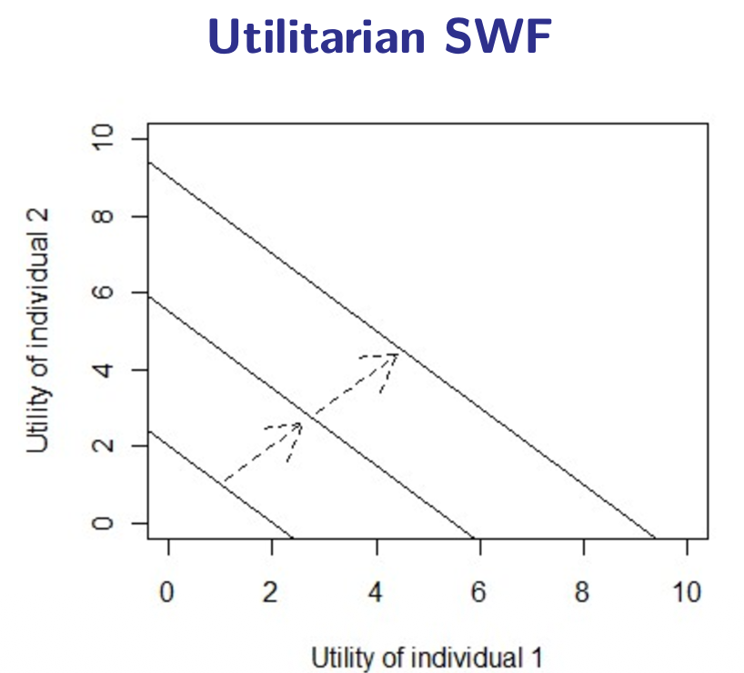
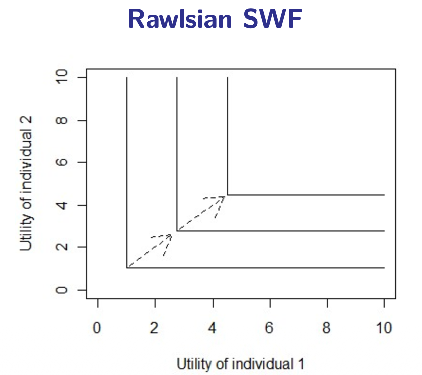
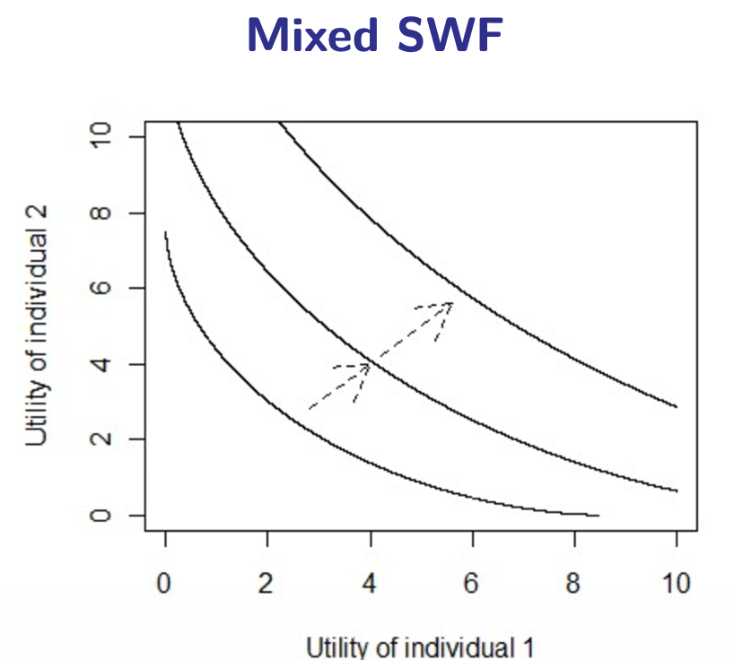

10.1 — Optimal Taxation: Framework & Social Welfare
Chapter 10: Optimal Taxation & Personal Income Tax — The Normative Core
Recap: How to Tax?
Lecture 9 established why governments tax. Lecture 10 asks the harder normative question: how should we design the tax system optimally? Two fundamental questions structure the whole debate:
⚡ HOW Do We Tax?
Efficiency & Flexibility. Minimize deadweight loss and administrative costs. Be flexible enough to respond to changing economic conditions.
Key costs: DWL from distorting behaviour + administrative burden.
👤 WHOM Do We Tax?
Equity & Transparency. Distribute the burden fairly. Vertical equity (rich pay more) and horizontal equity (equal treatment of equals).
Key concerns: vertical equity, horizontal equity, regressivity.
The Five Rs (Revenue, Redistribution, Repricing, Representation, Reparation) remind us that a tax is well-designed if it achieves a good balance across all five dimensions — doing very well on one does not necessarily justify doing worse on the others.
What Is Optimal Taxation?
People often treat top tax rates as a purely political question — a reflection of ideology rather than analysis. Economics reframes the question: instead of asking "how high should tax rates be?", optimal taxation asks:
📊 What is the Social Welfare Function?
What does society want to maximize? Do we care only about total utility (utilitarian), or especially about the worst-off (Rawlsian)? The shape of the SWF determines what "optimal" means.
📈 What Are the Income Utility Functions?
How does each person's well-being depend on income? The curvature of utility (diminishing marginal utility) tells us how much redistribution increases total welfare.
Optimal taxation seeks to design the tax/transfer system so as to maximize social welfare subject to a revenue constraint. The government's net benefit from acting is:
$\pi_s = u(\text{public expenditure}) - v(\text{public revenue})$
Intervention is justified as long as $\pi_s > 0$ — i.e., as long as the gain from public spending exceeds the cost of raising revenue through distortionary taxation.
⬆️ Force Pushing Rates Up: Equity
An additional dollar of income is worth more in utility terms to a low-income person than to a rich person (diminishing marginal utility). This means transferring a dollar from rich to poor increases total social welfare. → The optimal tax rate is pushed higher when equity concerns dominate.
⬇️ Force Pushing Rates Down: Efficiency
Taxes cause disutility (you give up income you could enjoy) and a behavioral response (people work less, evade more). This creates deadweight loss. → The optimal tax rate is pushed lower when efficiency concerns dominate (unless the behavioral response is itself desirable, as with Pigouvian taxes).
For the exam: The key reframing is this — optimal taxation converts a political question into a cost-benefit analysis using three inputs: (1) the social welfare function, (2) the utility function, and (3) behavioral elasticities. Know all three and how they interact.
The Social Welfare Function (SWF)
The SWF is a function that ranks social states — it tells us how much social welfare is generated by any given distribution of individual utilities. An optimal tax system is one that maximizes the SWF subject to the revenue constraint. But what SWF should we use?
- Utilitarian: $W = \sum_{i=1}^{N} U_i$ — Social welfare is the sum of all individual utilities. Each person's utility counts equally. Redistribution is justified only if it increases the total sum.
- Rawlsian: $W = \min\{U_i\}$ — Social welfare equals the utility of the worst-off individual. Only improvements to the least well-off person count as social progress (Maximin principle).
- Bernoulli-Nash: $W = \prod_{i=1}^{N} U_i$ — A geometric mean. It combines features of both utilitarian and Rawlsian approaches, penalizing very unequal distributions without ignoring the better-off entirely.
- Mean Bernoulli-Nash: $W = \frac{1}{N}\prod_{i=1}^{N} U_i$ — A normalized version that mixes approaches (2) and (3).
The choice of SWF is not a technical matter — it is a philosophical and political choice about what kind of society we want.
📊 Straight-Line Indifference Curves

Social indifference curves are straight downward-sloping lines. This reflects the key insight: one extra unit of utility has the same social value regardless of who receives it. Redistribution is justified only when it increases the total sum — not as an end in itself. Direction of improvement: north-east.
📐 L-Shaped Indifference Curves

Social indifference curves are L-shaped (right angles). The "kink" lies on the 45° line where both individuals have equal utility. Raising the better-off person's utility — while leaving the worst-off unchanged — does not improve social welfare at all. This justifies radical redistribution: transfer resources to the poorest even if the rich lose more than the poor gain.
📈 Convex Indifference Curves

Social indifference curves are smooth and convex — intermediate between straight lines and right angles. Gains for the worse-off person are valued more highly than equal gains for the better-off, but society is not completely indifferent to the total. Redistribution is desirable, but not at any cost.
Income Utility Functions: Why Redistribution Raises Welfare
To translate the SWF into policy, we also need to specify how each individual's utility depends on income. Two key properties drive the entire argument for redistribution:
📉 Diminishing Marginal Utility of Income
As income grows, each additional euro generates less extra utility. Going from €500/month to €600/month changes your life dramatically. Going from €10,000/month to €10,100/month barely registers. This is a well-established psychological and economic fact.
Implication for redistribution: Taking €100 from a millionaire costs them very little utility, but giving €100 to a poor person gives them a lot. Under a utilitarian SWF, redistribution therefore increases total social welfare — up to a point.
📈 Increasing Marginal Disutility of Giving Up Income
The flip side: giving up part of your income causes increasing pain as the share taken grows larger. A 10% tax on a low income hurts more (in utility terms) than a 10% tax on a high income.
Implication for optimal tax design: Even if redistribution is beneficial in aggregate, there is a limit — beyond a certain tax rate, the disutility imposed on the taxpayer outweighs the utility gained by the recipient, and total welfare falls.

The concave utility curve illustrates diminishing marginal utility of income. A transfer from a rich individual (R) to a poor individual (P) reduces the rich person's utility by a small amount, but increases the poor person's utility by a larger amount. The net change in total welfare is:
$\Delta U = \underbrace{\text{gain of poor}}_{\text{large}} + \underbrace{\text{loss of rich}}_{\text{small}} - \underbrace{\text{cost of taxation}}_{\text{DWL}}$
Redistribution improves welfare as long as the net gain exceeds the efficiency cost of collecting the tax. This is the fundamental justification for progressive taxation — it is not an ideological claim, but a consequence of diminishing marginal utility.
Chapter 10.1 — The Big Picture:
- Optimal taxation converts the political question "how high?" into a cost-benefit problem: maximize SWF subject to revenue constraint.
- Two forces: equity (diminishing MU → push rates up) vs. efficiency (distortions, behavioral response → push rates down).
- SWF shapes: Utilitarian (sum → straight indifference curves), Rawlsian (min → L-shaped), Mixed (convex). Each implies different optimal redistribution levels.
- Diminishing marginal utility is the core justification for progressive taxation: redistributing $1 from rich to poor raises total utility because the poor gain more than the rich lose.
- Why not 100%? Behavioral distortions + fairness perceptions (ultimatum game) + imperfect information about productivity.